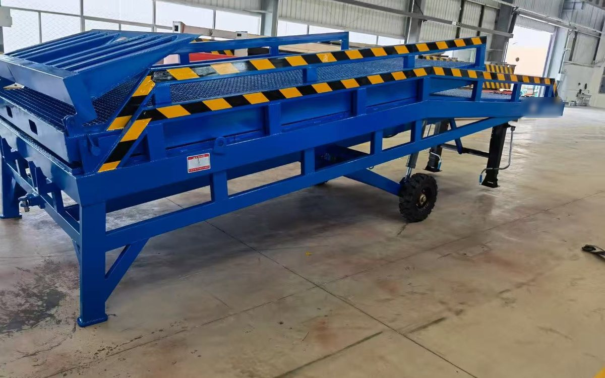
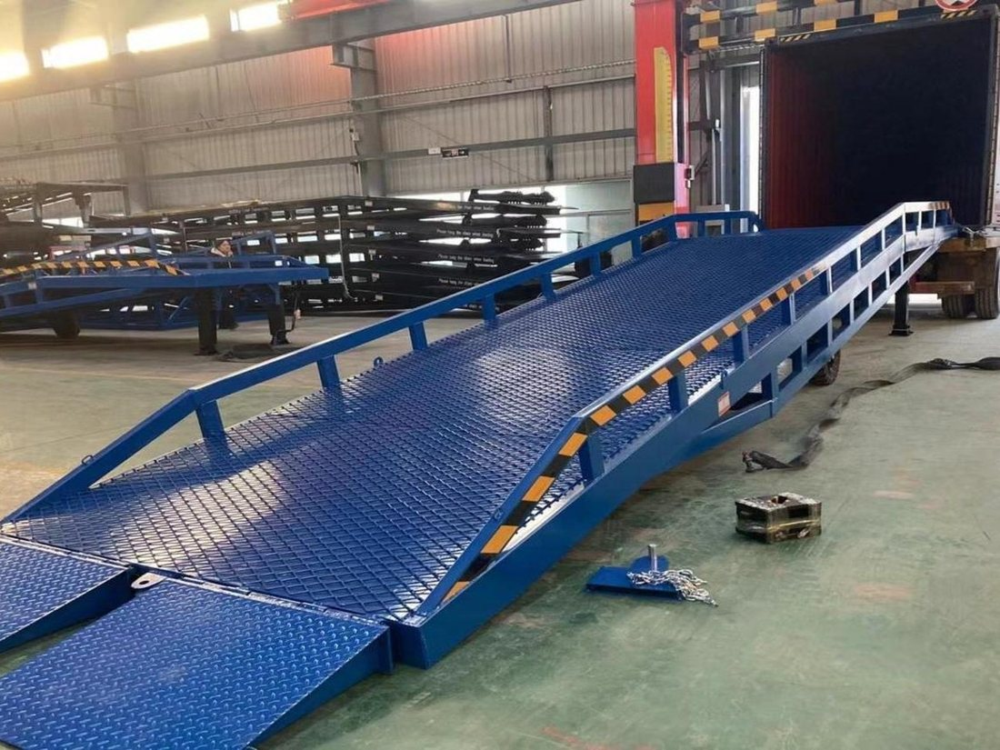
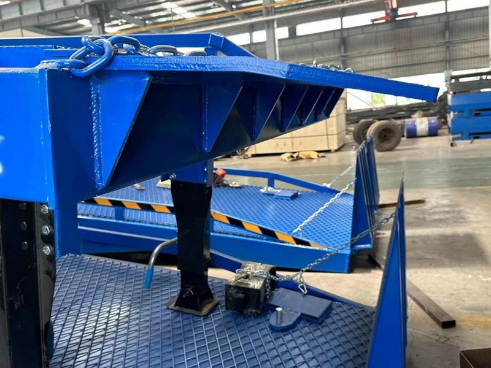
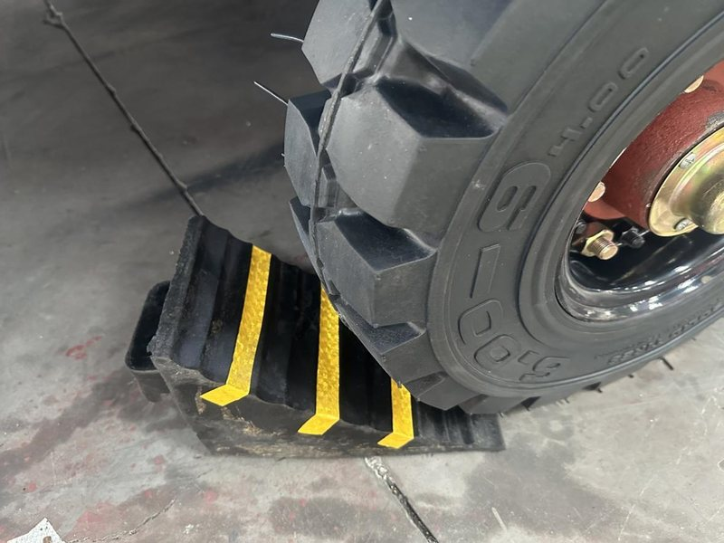
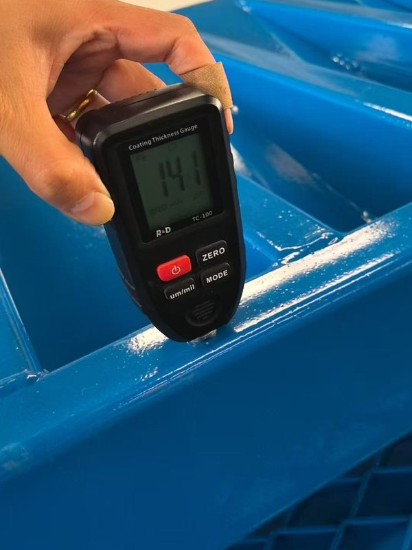
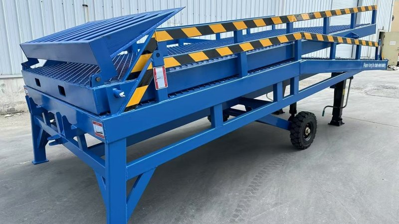
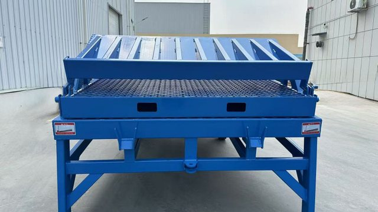

Forklifts drive straight up into the container
A mobile dock ramp for warehouses and yards without a loading dock. Standard and two-section types from 6 to 15 tons, raised by manual hydraulics to the truck floor height (1.1–1.8 m). Every model is 2.2 m wide.
Two types: standard and two-section
They work the same way. They differ in how they arrive, set up and store.

Standard
The slope and support frame are one piece. Set it down, adjust the height with the hydraulics and it is ready.
- Ready to use, no assembly
- For sites that keep it in one place

Two-section
The slope section arrives stacked on top of the support section. On site, a forklift lifts it and joins the two.
- Only 5.75 m long folded, easy to ship and store
- One forklift unfolds it on site
Height is raised by manual hydraulics
Pump the handle and two hydraulic cylinders push the ramp up. No electricity, no battery.
- Manual hydraulic pump, no power neededWorks in yards with no power supply.
- Two 80 mm hydraulic cylindersPumping the handle makes the cylinders push the wheel axle, raising the ramp.
- Matches truck floor heights of 1.1–1.8 mOpen the valve to lower it. 12 t and 15 t models: 1.2–1.8 m.
- 32 MPa high-pressure hosesA dedicated integrated pump connects to the cylinders through high-pressure hoses.


Three things to check first

Heavy steel frame
This is the frame before painting. Five main beams run the full length, with cross braces about every 40 cm.
- Main beams: 160×80×4 mm + 120×60×4 mm tube, 5 beams (10 t)
- Secondary beams: 100×50×4 mm tube
- Deck: 4 mm steel plate + 8 mm diamond mesh

Hydraulic height adjustment, no power
Pump the handle of the manual hydraulic pump and the ramp rises. With no power or battery needed, it works anywhere in the yard.
- 1.1–1.8 m with the manual hydraulic pump
- One person raises and lowers it by hand
- Fits containers, box trucks and cargo trucks

Puncture-proof solid tires
Solid rubber tires never go flat. The two hydraulic cylinders push this wheel axle to raise the ramp, and the same wheels are used to tow it.
- Solid tires: 600-9 for 6–10 t, 700-9 for 12–15 t
- Hydraulic cylinders: 80 mm × 2
- Wheel chocks included
Six more details







Included accessories
Wheel chocks, chains and a tow bar come with the ramp. The photo shows parts laid out before shipping.
- Wheel chocks
- Truck chains
- Forklift tow bar
Choose your color when you order
The standard color is blue. Tell us the color you want and we build it in that color.


Rust removed, then a baked-on coating
Shot blasting removes the rust, then an electrostatic powder coating is baked on. Coating thickness measured at the factory: 120–141 µm.


What capacity do you need?
Pick a capacity above your forklift weight plus the load it carries at once. Tap a number to see its specs.
Length 11.3 m = tail plate 0.8 + slope 7.1 + platform 3 + lip 0.4 m (10 t). Height is set with the manual hydraulic pump.
Same specs for standard and two-section
10t
Fits 3 t forklift work
e.g. forklift 4.3 t + load 3 t = 7.3 t. A size with room to spare.
- Rated capacity10 t
- Hydraulic height range1.1 ~ 1.8m
- Main beams160×80×4 + 120×60×4 tube, 5 beams
- Length × width11.3m × 2.2m
- Two-section folded length5.75m
- LiftingManual hydraulic pump (no power)
Capacity calculator
Enter the forklift's own weight from its spec sheet.
Raise it with the hydraulics, then back the truck in
Steps for docking with a container or truck. The two-section type works the same once unfolded.

- Lower the tail plate to the ground
- Close the hydraulic pump valve
- Pump the handle to raise it slightly above the truck floor
- Back the truck under the lip and set the parking brake
- Open the valve to rest the lip on the truck floor, then chain it
- Place chocks behind the wheels
- Fully release the cylinder pressure
- Lower the support legs under the ramp
In actual use, follow the instruction label on the product and the manual.
Ship it folded, unfold it on site
The two-section ramp arrives with the slope section stacked on the support section: 5.75 m folded, 11.3 m unfolded. A forklift lifts the slope section and hooks it onto the end of the support section.

- Place the folded ramp where you will use itThe support section with the wheels and legs is on the bottom.
- Lift the stacked slope section with a forkliftInsert the forks into the slope section's fork pockets and lift.
- Hook it onto the end of the support section and lower itOnce joined, the full length is 11.3 m.
- Set the height with the hydraulics and use itMatch the truck floor height with the manual hydraulic pump.



Specifications and drawing
| Capacity | Main beams | Deck plate | Hydraulic height range | Tires (solid) | Support legs | Length × width |
|---|
Higher capacities use heavier main beams and thicker deck plate. Every deck is covered with 8 mm diamond mesh, and every model lifts with a manual hydraulic pump. 20 t is also available to order.
10 t detailed specifications
- Rated load
- 10,000kg
- Hydraulic height range
- 1,100 ~ 1,800mm
- Overall size
- L 11,300 × W 2,200 mm
- Length breakdown
- Tail plate 800 + slope 7,100 + platform 3,000 + lip 400
- Two-section folded size
- 5,750 × 2,200 × 2,060mm
- Main beams
- 160×80×4 + 120×60×4 mm tube, 5 beams
- Cross brace spacing
- About 40 cm
- Secondary beams
- 100×50×4 mm tube
- Deck
- 4 mm steel plate + 8 mm diamond mesh
- Side curbs
- 200 mm high (40×80×3 mm tube)
- Lifting
- Dedicated integrated manual hydraulic pump
- Hydraulic cylinders
- 80 mm × 2
- Hydraulic hoses
- 32 MPa high-pressure hose
- Tires
- 600-9 solid tires × 2600-9 means a tire about 6 inches (15 cm) wide on a 9-inch wheel, roughly 54 cm across. These are solid rubber forklift tires, so they never go flat and never need air.
- Support legs
- 2 hand-cranked legs, 400 mm travel
- Container securing
- Welded hooks + steel chains
- Finish
- Shot blasting + electrostatic powder coating
- Colors
- Blue (other colors to order)
- Included
- Wheel chocks, truck chains, forklift tow bar
Drawing
Frequently asked questions
Can it be used in a yard without power?
Yes. A hand-pumped hydraulic pump raises and lowers it, so no electricity is needed.
I'm not sure which capacity to choose.
Add the forklift's own weight to the load it carries at once, then choose a capacity above that with some margin. Try the calculator above, or send us your forklift model and we will choose for you.
What is the difference between the standard and two-section types?
The standard type is one piece and ready as soon as it is set down. The two-section type has the slope section stacked on the support section (5.75 m folded), so it is easier to ship and store, and a forklift unfolds it on site. Both are used the same way.
Can I order a different length or width?
Yes. Tell us the site width, truck type and forklift size, and we will quote the right dimensions.
How do I move it?
It has wheels, so a forklift tows it. Fit the included tow bar and hitch it to the forklift. No fixed installation is needed.
What kind of tires does it have?
Solid tires. The rubber is solid all the way through, so they never go flat. 6–10 t models use 600-9, 12–15 t models use 700-9.
Can I choose the color?
Yes. Standard is blue, and we paint it in the color you want when you order. We confirm the real color with a sample before production.
How compact is the two-section type when folded?
Folded, it is 5.75 m long, 2.2 m wide and 2.06 m high (10 t model). Unfolded, it is 11.3 m long.
Get a quote
Tell us the capacity and where you will use it, and we will send the price and delivery date. It is fine if you are not sure about the capacity.